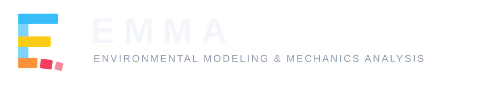
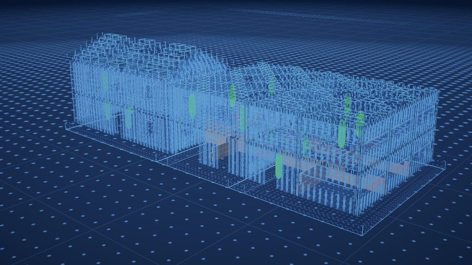
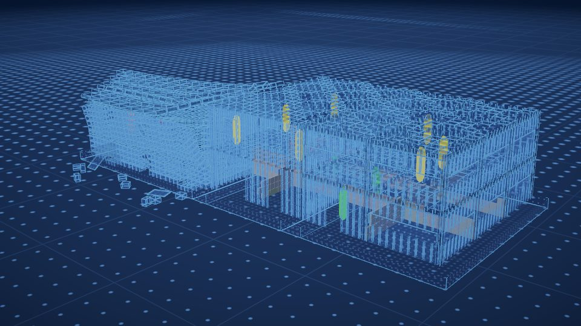
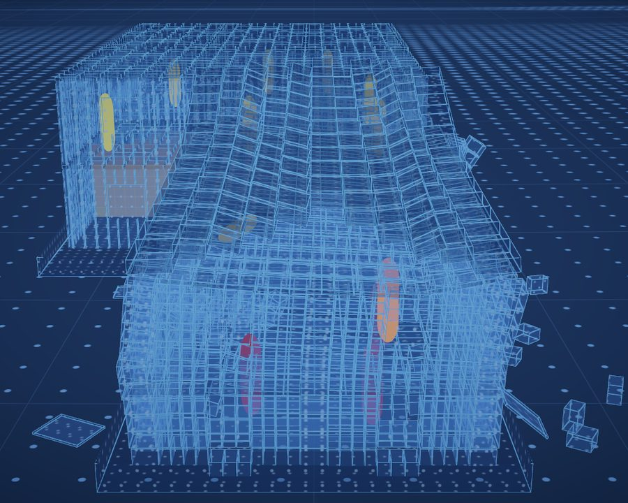
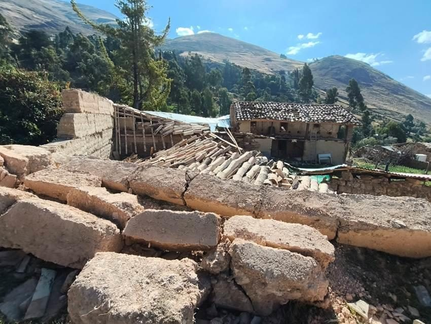
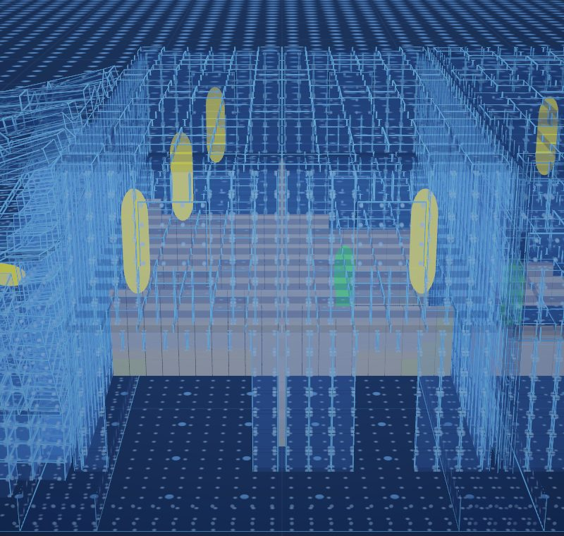
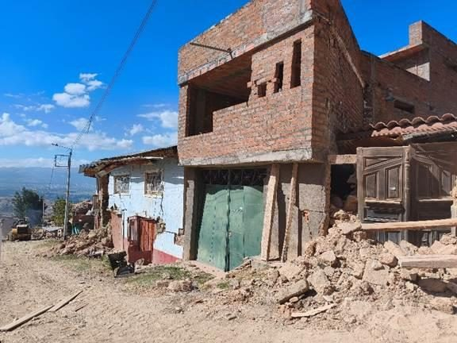
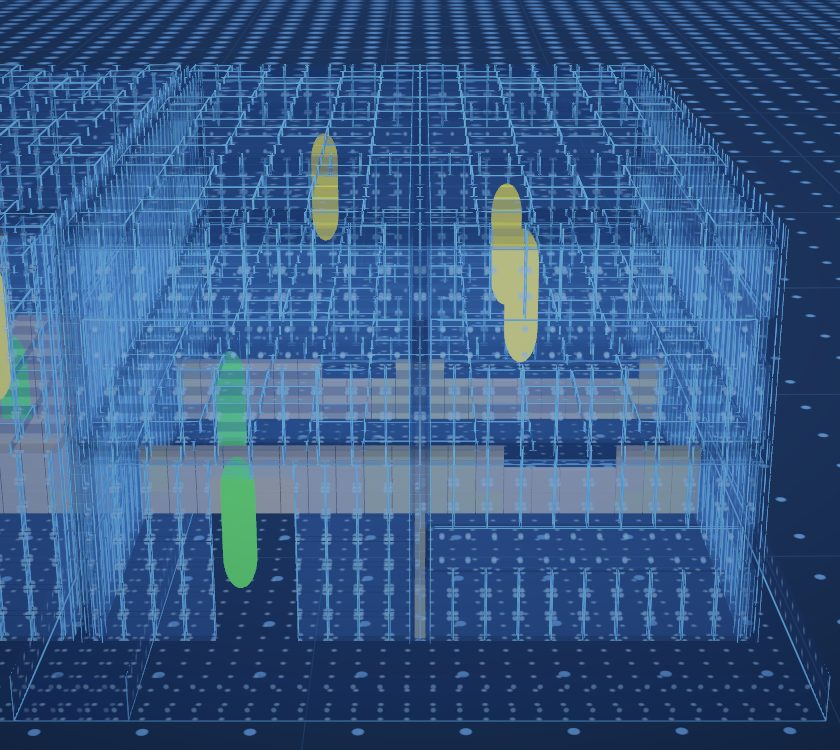
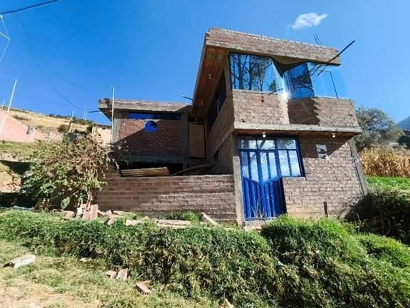

<title>EMMA</title>
<meta name="claude:viewport-fit-sides" content="cover">
<meta name="description" content="EMMA - Environmental Modeling & Mechanics Analysis. See how a building fails, and who gets hurt, before the earthquake comes.">
<link rel="preconnect" href="https://fonts.googleapis.com">
<link rel="preconnect" href="https://fonts.gstatic.com" crossorigin>
<link rel="stylesheet" href="https://fonts.googleapis.com/css2?family=Archivo:wdth,wght@62..125,300..800&family=IBM+Plex+Mono:wght@400;500&family=IBM+Plex+Sans:wght@400;500;600&display=swap">
<style>
/* Layout: the page reads like one of EMMA's own run reports - a dark review screen, a damage
   ramp from cyan (intact) to red (lost) as the only accent, and the numbers set in mono. */
:root {
  --bg: #0b111c;        /* the app's backdrop */
  --panel: #111a28;
  --panel-2: #16212f;
  --line: rgba(214, 226, 240, 0.10);
  --fg: #e8ecf1;
  --muted: #9aa5b4;
  --faint: #6b7686;
  --cyan: #4fc3f7;
  --yellow: #f5c842;
  --orange: #f5943c;
  --red: #ee4b5e;
  --ramp: linear-gradient(90deg, var(--cyan), var(--yellow) 33%, var(--orange) 66%, var(--red));

  --display: "Archivo", "Helvetica Neue", Arial, sans-serif;
  --body: "IBM Plex Sans", "Helvetica Neue", Arial, sans-serif;
  --mono: "IBM Plex Mono", ui-monospace, Menlo, monospace;

  --s-1: 0.8125rem; --s0: 1rem; --s1: 1.1875rem; --s2: 1.5rem; --s3: 2.125rem; --s4: clamp(2.25rem, 5.2vw, 3.875rem);
  --wrap: 72rem;
  color-scheme: dark;
}
* { box-sizing: border-box; }
html { scroll-behavior: smooth; }
@media (prefers-reduced-motion: reduce) { html { scroll-behavior: auto; } *, *::before, *::after { animation: none !important; transition: none !important; } }
body {
  background: var(--bg); color: var(--fg);
  font-family: var(--body); font-size: var(--s0); line-height: 1.6;
  -webkit-font-smoothing: antialiased;
}
body::before { content: ""; position: fixed; inset: 0 0 auto; height: env(safe-area-inset-top, 0px); z-index: 10; background: var(--bg); }
a { color: var(--cyan); text-underline-offset: 3px; }
a:focus-visible, button:focus-visible, input:focus-visible { outline: 2px solid var(--yellow); outline-offset: 3px; }
img { display: block; max-width: 100%; height: auto; }

.wrap {
  max-width: var(--wrap); margin-inline: auto;
  padding-left: max(16px, env(safe-area-inset-left, 0px));
  padding-right: max(16px, env(safe-area-inset-right, 0px));
}
.band { padding-block: clamp(3.5rem, 8vw, 6rem); border-top: 1px solid var(--line); }
.band.alt { background: var(--panel); }

.eyebrow {
  font-family: var(--display); font-stretch: 125%; font-weight: 500;
  font-size: var(--s-1); letter-spacing: 0.24em; text-transform: uppercase; color: var(--muted);
}
h1, h2, h3 { font-family: var(--display); text-wrap: balance; margin: 0; }
h1 { font-size: var(--s4); font-weight: 700; font-stretch: 88%; line-height: 1.04; letter-spacing: -0.01em; }
h2 { font-size: var(--s3); font-weight: 650; font-stretch: 92%; line-height: 1.12; }
h3 { font-size: var(--s1); font-weight: 650; line-height: 1.3; }
p { margin: 0; }
.lead { font-size: var(--s1); color: var(--muted); max-width: 40rem; }
.measure { max-width: 40rem; }
.mono { font-family: var(--mono); font-variant-numeric: tabular-nums; }
.ramp { height: 3px; background: var(--ramp); border-radius: 2px; }

/* Header */
.top { position: sticky; top: env(safe-area-inset-top, 0px); z-index: 5; background: color-mix(in srgb, var(--bg) 88%, transparent); backdrop-filter: blur(10px); border-bottom: 1px solid var(--line); }
.top .wrap { display: flex; align-items: center; justify-content: space-between; gap: 1rem; padding-block: 0.75rem; }
.top .lockup { height: 30px; width: auto; }
.top nav { display: flex; gap: 1.25rem; flex-wrap: wrap; }
.top nav a { color: var(--muted); text-decoration: none; font-size: var(--s-1); letter-spacing: 0.08em; text-transform: uppercase; font-family: var(--display); font-stretch: 112%; }
.top nav a:hover { color: var(--fg); }
@media (max-width: 640px) { .top nav { display: none; } }

/* Hero */
.hero { padding-block: clamp(2.5rem, 6vw, 4.5rem) clamp(3rem, 7vw, 5rem); }
.hero-grid { display: grid; grid-template-columns: minmax(0, 5fr) minmax(0, 7fr); gap: clamp(2rem, 4vw, 3.5rem); align-items: center; }
.hero-text { display: flex; flex-direction: column; gap: 1.25rem; min-width: 0; }
.hero-text .ramp { width: 7rem; }
.actions { display: flex; gap: 0.75rem; flex-wrap: wrap; padding-top: 0.5rem; }
.btn { display: inline-flex; align-items: center; gap: 0.5rem; padding: 0.7rem 1.1rem; border-radius: 6px; text-decoration: none; font-weight: 600; font-size: 0.9375rem; }
.btn.primary { background: var(--cyan); color: #06121c; }
.btn.primary:hover { background: #7dd4fa; }
.btn.ghost { color: var(--fg); border: 1px solid var(--line); }
.btn.ghost:hover { border-color: var(--muted); }
@media (max-width: 880px) { .hero-grid { grid-template-columns: minmax(0, 1fr); } }

/* Before / after */
.compare { position: relative; border-radius: 10px; overflow: hidden; border: 1px solid var(--line); background: #0a1424; aspect-ratio: 16 / 9; max-width: 100%; user-select: none; }
.compare img { position: absolute; inset: 0; width: 100%; height: 100%; object-fit: cover; }
.compare .after { clip-path: inset(0 0 0 var(--cut, 50%)); }
.compare .divider { position: absolute; top: 0; bottom: 0; left: var(--cut, 50%); width: 2px; margin-left: -1px; background: var(--fg); box-shadow: 0 0 12px rgba(79, 195, 247, 0.7); pointer-events: none; }
.compare .divider::after { content: ""; position: absolute; top: 50%; left: 50%; width: 34px; height: 34px; margin: -17px 0 0 -17px; border-radius: 50%; background: var(--bg); border: 2px solid var(--fg); }
.compare .tag { position: absolute; top: 0.75rem; padding: 0.2rem 0.55rem; border-radius: 4px; background: rgba(11, 17, 28, 0.78); font-family: var(--mono); font-size: 0.75rem; letter-spacing: 0.04em; color: var(--fg); pointer-events: none; }
.compare .tag.l { left: 0.75rem; }
.compare .tag.r { right: 0.75rem; }
.compare input[type="range"] { position: absolute; inset: 0; width: 100%; height: 100%; margin: 0; opacity: 0; cursor: ew-resize; }
.compare:has(input:focus-visible) { outline: 2px solid var(--yellow); outline-offset: 3px; }
figcaption, .caption { font-size: var(--s-1); color: var(--faint); padding-top: 0.6rem; }

/* Run numbers */
.run { display: grid; grid-template-columns: repeat(5, minmax(0, 1fr)); border-block: 1px solid var(--line); }
.run div { padding: 1.1rem 1rem; border-left: 1px solid var(--line); min-width: 0; }
.run div:first-child { border-left: 0; padding-left: 0; }
.run b { display: block; font-family: var(--mono); font-weight: 500; font-size: var(--s2); color: var(--fg); font-variant-numeric: tabular-nums; }
.run span { font-size: var(--s-1); color: var(--muted); }
@media (max-width: 880px) {
  .run { grid-template-columns: repeat(2, minmax(0, 1fr)); }
  .run div { border-left: 0; border-top: 1px solid var(--line); padding-left: 0; }
  .run div:nth-child(-n+2) { border-top: 0; }
}

/* Case study */
.section-head { display: flex; flex-direction: column; gap: 0.9rem; margin-bottom: 2.5rem; }
.facts { display: grid; grid-template-columns: repeat(4, minmax(0, 1fr)); gap: 1px; background: var(--line); border: 1px solid var(--line); border-radius: 8px; overflow: hidden; margin-bottom: 3rem; }
.facts div { background: var(--bg); padding: 1rem 1.1rem; min-width: 0; }
.band.alt .facts div { background: var(--panel); }
.facts dt { font-size: var(--s-1); color: var(--muted); }
.facts dd { margin: 0.2rem 0 0; font-family: var(--mono); font-size: var(--s1); }
@media (max-width: 760px) { .facts { grid-template-columns: repeat(2, minmax(0, 1fr)); } }

.house { display: grid; grid-template-columns: minmax(0, 4fr) minmax(0, 5fr) minmax(0, 5fr); gap: 1.5rem; padding-block: 2rem; border-top: 1px solid var(--line); align-items: start; }
.house:first-of-type { border-top: 0; }
.house .about { display: flex; flex-direction: column; gap: 0.75rem; min-width: 0; }
.house .about p { color: var(--muted); font-size: 0.9375rem; }
.verdict { display: inline-flex; align-items: center; gap: 0.5rem; font-family: var(--mono); font-size: 0.8125rem; padding: 0.25rem 0.6rem; border-radius: 4px; width: fit-content; }
.verdict::before { content: ""; width: 8px; height: 8px; border-radius: 2px; background: currentColor; }
.v-red { color: var(--red); background: rgba(238, 75, 94, 0.12); }
.v-yellow { color: var(--yellow); background: rgba(245, 200, 66, 0.12); }
.v-cyan { color: var(--cyan); background: rgba(79, 195, 247, 0.12); }
.people { font-size: 0.875rem; color: var(--fg); }
.people dt { color: var(--muted); font-size: var(--s-1); }
.people dd { margin: 0 0 0.4rem; }
.pic { margin: 0; min-width: 0; }
.pic img { width: 100%; aspect-ratio: 4 / 3; object-fit: cover; border-radius: 8px; border: 1px solid var(--line); }
.pic .who { font-family: var(--display); font-stretch: 118%; font-size: 0.6875rem; letter-spacing: 0.2em; text-transform: uppercase; color: var(--muted); padding-bottom: 0.5rem; }
.pic .who.sim { color: var(--cyan); }
@media (max-width: 880px) { .house { grid-template-columns: minmax(0, 1fr) minmax(0, 1fr); } .house .about { grid-column: 1 / -1; } }
@media (max-width: 520px) { .house { grid-template-columns: minmax(0, 1fr); } }

/* Shaking levels */
.levels-wrap { overflow-x: auto; margin-top: 3rem; border: 1px solid var(--line); border-radius: 8px; }
table { border-collapse: collapse; width: 100%; min-width: 40rem; font-size: 0.9375rem; }
th, td { text-align: left; padding: 0.85rem 1rem; border-top: 1px solid var(--line); vertical-align: top; }
thead th { border-top: 0; font-family: var(--display); font-stretch: 112%; font-weight: 600; font-size: var(--s-1); letter-spacing: 0.1em; text-transform: uppercase; color: var(--muted); background: var(--panel-2); }
tbody th { font-family: var(--mono); font-weight: 500; white-space: nowrap; }
tbody th small { display: block; font-family: var(--body); color: var(--faint); font-size: 0.75rem; white-space: normal; }
.cell { display: inline-flex; align-items: center; gap: 0.45rem; }
.cell::before { content: ""; width: 8px; height: 8px; border-radius: 2px; background: var(--dot); flex: none; }
.c-red { --dot: var(--red); } .c-yellow { --dot: var(--yellow); } .c-cyan { --dot: var(--cyan); } .c-orange { --dot: var(--orange); }

/* Other events */
.events { display: grid; grid-template-columns: minmax(0, 1fr) minmax(0, 1fr); gap: 2rem; }
.event { display: flex; flex-direction: column; gap: 1rem; min-width: 0; }
.event .pair { display: grid; grid-template-columns: minmax(0, 1fr) minmax(0, 1fr); gap: 0.5rem; }
.event img { width: 100%; aspect-ratio: 1 / 1; object-fit: cover; border-radius: 8px; border: 1px solid var(--line); }
.event .wide img { aspect-ratio: 2 / 1; }
.event p { color: var(--muted); font-size: 0.9375rem; }
.event .mono { color: var(--fg); font-size: 0.875rem; }
@media (max-width: 880px) { .events { grid-template-columns: minmax(0, 1fr); } }

/* How it works - a real sequence, so it is numbered */
.steps { display: grid; grid-template-columns: repeat(4, minmax(0, 1fr)); gap: 0; counter-reset: step; }
.step { padding: 1.5rem 1.25rem 1.5rem 0; border-top: 3px solid var(--c); min-width: 0; }
.step + .step { padding-left: 1.25rem; }
.step:nth-child(1) { --c: var(--cyan); } .step:nth-child(2) { --c: var(--yellow); } .step:nth-child(3) { --c: var(--orange); } .step:nth-child(4) { --c: var(--red); }
.step .n { font-family: var(--mono); color: var(--c); font-size: var(--s-1); }
.step h3 { padding-block: 0.35rem 0.6rem; }
.step p { color: var(--muted); font-size: 0.9375rem; }
@media (max-width: 880px) { .steps { grid-template-columns: repeat(2, minmax(0, 1fr)); row-gap: 1.5rem; } .step:nth-child(3) { padding-left: 0; } }
@media (max-width: 520px) { .steps { grid-template-columns: minmax(0, 1fr); } .step + .step { padding-left: 0; } }

/* Lab checks + scope */
.two { display: grid; grid-template-columns: minmax(0, 1fr) minmax(0, 1fr); gap: clamp(2rem, 5vw, 4rem); }
@media (max-width: 880px) { .two { grid-template-columns: minmax(0, 1fr); } }
.checks { list-style: none; margin: 1.5rem 0 0; padding: 0; display: flex; flex-direction: column; }
.checks li { padding-block: 0.9rem; border-top: 1px solid var(--line); display: grid; grid-template-columns: minmax(0, 1fr) auto; gap: 0.25rem 1rem; }
.checks li:first-child { border-top: 0; }
.checks b { font-weight: 600; }
.checks span { color: var(--muted); font-size: 0.875rem; grid-column: 1; }
.checks .mono { grid-column: 2; grid-row: 1 / span 2; align-self: center; color: var(--fg); font-size: 0.875rem; text-align: right; }
.scope { display: flex; flex-direction: column; gap: 1.25rem; margin-top: 1.5rem; }
.scope h3 { font-size: var(--s0); font-family: var(--display); font-stretch: 112%; letter-spacing: 0.12em; text-transform: uppercase; }
.scope ul { margin: 0.5rem 0 0; padding-left: 1.1rem; color: var(--muted); display: flex; flex-direction: column; gap: 0.4rem; }
.scope .for h3 { color: var(--cyan); }
.scope .not h3 { color: var(--orange); }

/* Video */
.video { display: block; width: 100%; aspect-ratio: 16 / 9; max-width: 100%; border-radius: 10px; border: 1px solid var(--line); background: #05080e; object-fit: cover; }
.watch { display: grid; grid-template-columns: minmax(0, 8fr) minmax(0, 4fr); gap: clamp(1.5rem, 3vw, 2.5rem); align-items: end; }
.watch .side { display: flex; flex-direction: column; gap: 1rem; min-width: 0; }
.watch .side p { color: var(--muted); }
.watch ul { margin: 0; padding: 0; list-style: none; display: flex; flex-direction: column; gap: 0.55rem; font-size: 0.9375rem; }
.watch li { display: flex; gap: 0.6rem; align-items: baseline; }
.watch li i { width: 8px; height: 8px; border-radius: 2px; flex: none; transform: translateY(-1px); }
@media (max-width: 880px) { .watch { grid-template-columns: minmax(0, 1fr); } }
.workflow { margin-top: 2.75rem; }

/* Footer */
footer { border-top: 1px solid var(--line); padding-block: 2.5rem 3rem; }
footer .wrap { display: flex; flex-wrap: wrap; justify-content: space-between; align-items: flex-end; gap: 1.5rem; }
footer .brand { display: flex; flex-direction: column; gap: 0.9rem; }
footer .brand img.lockup { height: 26px; width: auto; }
footer .brand img.powered { height: 13px; width: auto; }
footer p { font-size: var(--s-1); color: var(--faint); max-width: 34rem; }
</style>

<header class="top">
  <div class="wrap">
    <a href="#top" aria-label="EMMA, back to top"></a>
    <nav aria-label="Sections">
      <a href="#watch">Watch</a>
      <a href="#pumpunya">Pumpunya</a>
      <a href="#events">Other events</a>
      <a href="#how">How it works</a>
      <a href="#checks">Lab checks</a>
    </nav>
  </div>
</header>

<main id="top">
  <section class="hero">
    <div class="wrap hero-grid">
      <div class="hero-text">
        <span class="eyebrow">Environmental Modeling &amp; Mechanics Analysis</span>
        <h1>See how a building fails, and who gets hurt, before the earthquake comes.</h1>
        <div class="ramp" aria-hidden="true"></div>
        <p class="lead">EMMA cuts a building into thousands of pieces joined by springs, shakes it, and follows every piece from the first crack to the rubble on the ground, with the people inside.</p>
        <div class="actions">
          <a class="btn primary" href="#pumpunya">See the Pumpunya case</a>
          <a class="btn ghost" href="#how">How it works</a>
        </div>
      </div>
      <figure class="pic" style="margin:0">
        <div class="compare" id="compare" style="--cut: 50%">
          
          
          <div class="divider" aria-hidden="true"></div>
          <span class="tag l">BEFORE</span>
          <span class="tag r">AFTER 12 s · 0.3 g</span>
          <input type="range" id="compare-range" min="0" max="100" value="50" aria-label="Drag to compare the street before and after the earthquake">
        </div>
        <figcaption>Pumpunya street in EMMA's transparent view. Drag across the picture to compare before and after. People are coloured by injury.</figcaption>
      </figure>
    </div>
  </section>

  <div class="wrap">
    <div class="run" aria-label="The Pumpunya run in numbers">
      <div><b>8,191</b><span>pieces in the street</span></div>
      <div><b>351,872</b><span>spring sets joining them</span></div>
      <div><b>0.01 ms</b><span>time step</span></div>
      <div><b>15</b><span>people followed, room by room</span></div>
      <div><b>3 h 40 min</b><span>to solve on one computer</span></div>
    </div>
  </div>

  <section class="band" id="watch" style="border-top:0">
    <div class="wrap">
      <div class="section-head">
        <span class="eyebrow">Watch EMMA</span>
        <h2>A four-storey frame comes down, and every person is accounted for</h2>
      </div>
      <div class="watch">
        <video class="video autoplay" src="assets/collapse.mp4" poster="assets/poster-collapse.jpg" muted loop playsinline preload="metadata" controls aria-label="EMMA review screen: a four-storey concrete frame collapsing in an earthquake, with the list of people inside updating"></video>
        <div class="side">
          <p>The review screen after a run: the building in the transparent view, and the list of everyone inside. Each person is graded as the floors come down, with where they were and what happened to them.</p>
          <ul>
            <li><b>Safe</b>&nbsp;· no injury</li>
            <li><b>Injured</b>&nbsp;· light, serious or critical</li>
            <li><b>Trapped</b>&nbsp;· alive in a void under the rubble</li>
            <li><b>Fatal</b>&nbsp;· with the cause, such as "crushed" or "buried"</li>
          </ul>
        </div>
      </div>
    </div>
  </section>

  <section class="band" id="pumpunya">
    <div class="wrap">
      <div class="section-head">
        <span class="eyebrow">Case study · Chupaca, Junín, Peru</span>
        <h2>Pumpunya, 18 July 2026</h2>
        <p class="lead">At 21:24 an M5.4 earthquake struck 7 km south of Chupaca. In Pumpunya, an annex of Chongos Bajo, about 90&nbsp;% of the settlement was destroyed or left uninhabitable. Four of the six or seven people who died lived there, most in adobe houses.</p>
      </div>
      <dl class="facts">
        <div><dt>Magnitude</dt><dd>M5.4 (IGP)</dd></div>
        <div><dt>Depth</dt><dd>≈ 10 km</dd></div>
        <div><dt>Recorded in Huancayo, 18 km away</dt><dd>0.05–0.07 g</dd></div>
        <div><dt>Chongos Bajo homes</dt><dd>129 destroyed · 633 unsafe</dd></div>
      </dl>

      <div class="section-head" style="margin-bottom:0.5rem">
        <h3 style="font-size:var(--s2)">One street, three ways to build, the same earthquake</h3>
        <p class="measure" style="color:var(--muted)">We rebuilt a Pumpunya street in EMMA: three two-storey houses side by side, five people in each, shaken by the same ground. Each simulated house is shown next to a house of the same kind photographed after the earthquake.</p>
      </div>

      <article class="house">
        <div class="about">
          <h3>Adobe with a tiled roof</h3>
          <p>Old adobe walls 50 cm thick, corners butted rather than bonded, timber floors and a heavy tile roof resting on gables.</p>
          <span class="verdict v-red">Collapsed · 3,075 of 3,104 pieces</span>
          <dl class="people">
            <dt>People inside (5)</dt><dd>3 killed on the ground floor, crushed under the upper floor. 1 seriously hurt, buried. 1 trapped in a void 1.9 m high.</dd>
            <dt>In Pumpunya</dt><dd>Adobe houses collapsed or were left unsafe to enter.</dd>
          </dl>
        </div>
        <figure class="pic"><div class="who sim">EMMA · 0.3 g</div></figure>
        <figure class="pic"><div class="who">Pumpunya · CISMID-UNI</div></figure>
      </article>

      <article class="house">
        <div class="about">
          <h3>Plain clay brick</h3>
          <p>Hand-made clay brick 13 cm thick, concrete floors, no concrete frame around the walls.</p>
          <span class="verdict v-yellow">Standing · light cracks</span>
          <dl class="people">
            <dt>People inside (5)</dt><dd>4 knocked down by the floor shaking, lightly hurt. 1 unharmed.</dd>
            <dt>In Pumpunya</dt><dd>Cracked walls, held up with timber props, standing.</dd>
          </dl>
        </div>
        <figure class="pic"><div class="who sim">EMMA · 0.3 g</div></figure>
        <figure class="pic"><div class="who">Pumpunya · CISMID-UNI</div></figure>
      </article>

      <article class="house">
        <div class="about">
          <h3>Confined brick</h3>
          <p>The same brick, built inside concrete tie columns and beams.</p>
          <span class="verdict v-cyan">Standing · light cracks</span>
          <dl class="people">
            <dt>People inside (5)</dt><dd>3 knocked down, lightly hurt. 2 unharmed.</dd>
            <dt>In Pumpunya</dt><dd>No significant damage.</dd>
          </dl>
        </div>
        <figure class="pic"><div class="who sim">EMMA · 0.3 g</div></figure>
        <figure class="pic"><div class="who">Pumpunya · CISMID-UNI</div></figure>
      </article>

      <div class="levels-wrap">
        <table>
          <caption class="caption" style="caption-side:bottom; text-align:left; padding:0.75rem 1rem">The ground in all three runs: a synthetic record shaped like what CISMID measured, 12 s long and strongest at 6.7 Hz, the range where one- and two-storey adobe houses shake hardest.</caption>
          <thead>
            <tr><th scope="col">Shaking</th><th scope="col">Adobe</th><th scope="col">Plain brick</th><th scope="col">Confined brick</th><th scope="col">People</th></tr>
          </thead>
          <tbody>
            <tr>
              <th scope="row">0.15 g<small>estimated for Pumpunya from the recordings</small></th>
              <td><span class="cell c-red">Collapse</span></td><td><span class="cell c-cyan">A few cracks</span></td><td><span class="cell c-cyan">A few cracks</span></td>
              <td>Adobe: 3 killed, 2 critical. Brick houses: all 10 unharmed.</td>
            </tr>
            <tr>
              <th scope="row">0.3 g<small>the worst spots near the fault</small></th>
              <td><span class="cell c-red">Collapse</span></td><td><span class="cell c-yellow">Light cracks</span></td><td><span class="cell c-yellow">Light cracks</span></td>
              <td>Adobe: 3 killed, 1 serious, 1 trapped. Brick houses: 7 lightly hurt, 3 unharmed.</td>
            </tr>
            <tr>
              <th scope="row">0.6 g<small>stronger than this earthquake</small></th>
              <td><span class="cell c-red">Collapse</span></td><td><span class="cell c-orange">More cracking</span></td><td><span class="cell c-orange">More cracking</span></td>
              <td>Adobe: 4 killed, 1 serious. Brick houses: all 10 lightly hurt.</td>
            </tr>
          </tbody>
        </table>
      </div>
    </div>
  </section>

  <section class="band alt" id="events">
    <div class="wrap">
      <div class="section-head">
        <span class="eyebrow">The same engine</span>
        <h2>Other buildings, other events</h2>
        <p class="lead">The houses in Pumpunya and a four-storey concrete frame run on the same solver. So do several buildings at once, and a blast.</p>
      </div>
      <div class="events">
        <article class="event">
          <video class="video autoplay" src="assets/site.mp4" poster="assets/poster-site.jpg" muted loop playsinline preload="none" aria-label="Three buildings on one site shaken together; people inside coloured by injury"></video>
          <h3>Three buildings on one site, 38 people</h3>
          <p>Two four-storey concrete frames and a three-storey one, side by side, shaken by an M7 earthquake set to 1.0 g. Neighbours sway into each other and fall separately, and each person is followed to where they end up.</p>
          <p class="mono">3 buildings · 1,374 pieces · 38 people</p>
        </article>
        <article class="event">
          <video class="video autoplay" src="assets/blast.mp4" poster="assets/poster-blast.jpg" muted loop playsinline preload="none" aria-label="Blast beside a concrete frame: the crater, facade torn away, people graded by what hit them"></video>
          <h3>Blast beside a building</h3>
          <p>The blast load is worked out for every piece of the facade. The crater is dug into the ground, panels are torn off and thrown, floors that lose their supports fall, and each person is graded by what hit them.</p>
          <p class="mono">crater 9.8 m across, 1.6 m deep</p>
        </article>
      </div>
    </div>
  </section>

  <section class="band" id="how">
    <div class="wrap">
      <div class="section-head">
        <span class="eyebrow">How it works</span>
        <h2>From a floor plan to the rubble, in four steps</h2>
      </div>
      <div class="steps">
        <div class="step"><span class="n">01</span><h3>Build</h3><p>Describe the building by storeys, bays, walls and materials, or import a model. Every wall, floor, column and roof is cut into pieces.</p></div>
        <div class="step"><span class="n">02</span><h3>Shake</h3><p>Choose a recorded earthquake, a synthetic one shaped for the site, or a blast. Place people in the rooms.</p></div>
        <div class="step"><span class="n">03</span><h3>Solve</h3><p>Touching pieces are joined by springs that crack, crush and slide (the applied element method). Pieces that break free fall, hit and pile up.</p></div>
        <div class="step"><span class="n">04</span><h3>Review</h3><p>Play the run forwards and backwards. See damage by colour, look through the walls, and read why each person was hurt, such as "crushed under the floor" or "trapped in a void".</p></div>
      </div>
      <figure class="workflow" style="margin-inline:0">
        <video class="video" src="assets/workflow.mp4" poster="assets/poster-workflow.jpg" controls playsinline preload="none" aria-label="The EMMA workflow: configure the structure, set up the earthquake, edit occupancy, simulate, view the report"></video>
        <figcaption>The four steps in the application, in about a minute: configure the structure, set up the earthquake, place the people, simulate, and read the report.</figcaption>
      </figure>
    </div>
  </section>

  <section class="band alt" id="checks">
    <div class="wrap two">
      <div>
        <span class="eyebrow">Checked against lab tests</span>
        <h2 style="padding-top:0.9rem">Measured, and still being measured</h2>
        <ul class="checks">
          <li><b>UCSD shake table</b><span>Three-storey concrete frame with brick infill, 14 earthquakes up to collapse</span><span class="mono">collapses in the right storey</span></li>
          <li><b>Colorado push tests (CU1, CU2)</b><span>One-storey infilled frame pushed sideways, with and without a window</span><span class="mono">peak 65–86 % of test</span></li>
          <li><b>Beams and columns</b><span>Cantilevers, fixed beams, concrete sections to first yield</span><span class="mono">108.6 vs 108.5 kNm</span></li>
        </ul>
        <p class="caption" style="padding-top:1rem">Inputs are never tuned to make a test match. The model still errs toward the building surviving.</p>
      </div>
      <div>
        <span class="eyebrow">Where it fits</span>
        <h2 style="padding-top:0.9rem">What EMMA is for</h2>
        <div class="scope">
          <div class="for">
            <h3>For</h3>
            <ul>
              <li>Comparing ways of building under the same earthquake</li>
              <li>Showing where people get trapped, and where the voids are</li>
              <li>Explaining to residents and officials why construction matters</li>
            </ul>
          </div>
          <div class="not">
            <h3>Not yet</h3>
            <ul>
              <li>Approving or condemning a real building</li>
              <li>A life-safety system</li>
              <li>The houses here are typical, not surveyed. Adobe properties come from published Peruvian studies and have not yet been checked against PUCP shake-table tests.</li>
            </ul>
          </div>
        </div>
      </div>
    </div>
  </section>
</main>

<footer>
  <div class="wrap">
    <div class="brand">
      
      
    </div>
    <p>Photos of Pumpunya: CISMID-UNI, <a href="https://www.cismid.uni.edu.pe/wp-content/uploads/2026/08/Informe_SismoChupaca_20260718_v2.pdf">Informe Sismo Chupaca, 18 July 2026</a>. Earthquake figures: IGP and CISMID-UNI. All simulation pictures are from EMMA runs.</p>
  </div>
</footer>

<script>
(function () {
  var box = document.getElementById('compare');
  var range = document.getElementById('compare-range');
  if (!box || !range) return;
  function set(v) { box.style.setProperty('--cut', v + '%'); }
  range.addEventListener('input', function () { set(range.value); });
  set(range.value);
})();
(function () {
  var vids = document.querySelectorAll('video.autoplay');
  var still = window.matchMedia && window.matchMedia('(prefers-reduced-motion: reduce)').matches;
  if (still || !('IntersectionObserver' in window)) return;
  var io = new IntersectionObserver(function (entries) {
    entries.forEach(function (e) {
      var v = e.target;
      if (e.isIntersecting) { v.preload = 'auto'; var p = v.play(); if (p && p.catch) p.catch(function () {}); }
      else v.pause();
    });
  }, { threshold: 0.35 });
  vids.forEach(function (v) { io.observe(v); });
})();
</script>
